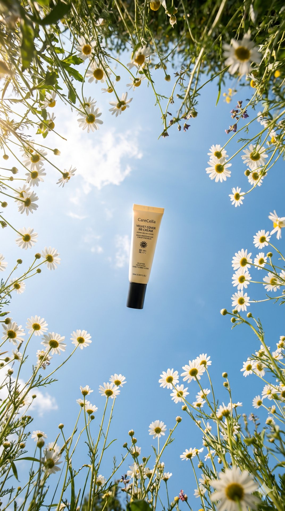

오늘의 프롬프트AI로사쌤 · 5번
하늘에서 쏟아지는 제품 광고 영상
제품 사진 한 장으로 광고 사진을 만들고, 그 사진으로 영상까지 만드는 두 단계예요. 어떤 제품이든 쓸 수 있어요.
1단계 · 광고 사진 만들기

제미나이나 챗GPT에 내 제품 사진을 먼저 올리고, 아래 프롬프트를 붙여넣으세요.
업로드한 이미지 속 제품을 사용한 실사 광고 사진. 1인칭 POV 시점: 케모마일 꽃밭에 등을 대고 누워 하늘을 똑바로 올려다보는 눈높이에서 본 장면. 사람, 손, 팔, 신체는 전혀 나오지 않음. 화면 가장자리에는 초점이 흐린 케모마일 꽃잎과 작은 들꽃이 둘러싸고, 가운데는 흰 구름이 조금 떠 있는 맑고 파란 하늘.
제품: 업로드한 제품을 그대로 사용. 형태, 비율, 색상, 라벨 디자인, 인쇄된 글자를 바꾸지 말고 다시 디자인하지 말 것. 하늘 한가운데 높은 곳에 제품이 딱 1개만 떠서 카메라를 향해 떨어져 내려오는 순간. 제품은 아직 멀리 있어 화면에서 작게 보이지만 형태와 라벨은 알아볼 수 있게. 하늘에 다른 제품은 없음.
조명: 밝은 한낮의 햇살, 제품 가장자리에 반짝이는 햇빛, 광각 렌즈 느낌.
고해상도 4K 실사, 제품의 질감과 라벨까지 선명하게, 제품에 원래 있는 글자 외에는 글자·로고·워터마크 없음, 세로 9:16.
2단계 · 광고 영상 만들기
1단계에서 만든 사진을 영상 도구에 첫 장면으로 올리고, 아래 프롬프트를 붙여넣으세요.
1인칭 POV 시점 유지: 케모마일 꽃밭에 누워 하늘을 올려다보는 눈높이에서 본 장면. 카메라는 하늘을 향한 채 고정하고 아주 미세하게만 흔들림. 영상 전체에 사람, 손, 팔, 신체는 절대 나오지 않고 제품과 하늘, 꽃잎만 보임. 제품의 형태, 색, 라벨, 인쇄된 글자는 첫 프레임 그대로 유지하고 일그러지거나 다른 제품으로 바뀌지 않게. 나중에 쏟아지는 제품도 모두 첫 프레임의 제품과 완전히 똑같은 제품.
0~3초: 하늘에 제품이 딱 1개만 보임. 그 제품 하나가 천천히 회전하며 카메라를 향해 떨어져 점점 커지다가, 라벨이 정면으로 크게 보이는 순간 화면 옆을 스치며 케모마일꽃밭 위로 톡 떨어짐. 이 구간에는 다른 제품이 절대 나타나지 않음.
3~4초: 잠깐 고요한 파란 하늘. 저 멀리 높은 곳에 작은 점들이 하나둘 나타나기 시작함.
4~9초: 똑같은 제품 수십 개가 하늘에서 우르르 한꺼번에 쏟아져 내려옴. 빙글빙글 회전하며 가까워질수록 커지고, 화면 양옆과 위아래를 스치듯 지나가 잔디 위로 툭툭 떨어짐. 가장 가까이 오는 순간은 살짝 슬로모션으로 라벨이 또렷하게 보임.
9~10초: 하늘 가득 제품이 계속 쏟아지는 가운데, 제품 하나가 카메라 바로 앞까지 다가와 라벨이 정면으로 화면을 크게 채우며 마무리.
소리: 처음에는 고요한 바람 소리와 제품 하나가 잔디에 톡 떨어지는 소리, 이어서 여러 개가 바람을 가르며 쏟아지고 잔디에 우수수 떨어지는 소리. 사람 목소리 없음.
4K 고해상도 실사 영상, 10초 원테이크, 낙하 움직임은 물리적으로 자연스럽게, 화면에 자막이나 새로운 글자·로고 없음.
출처 · AI로사쌤